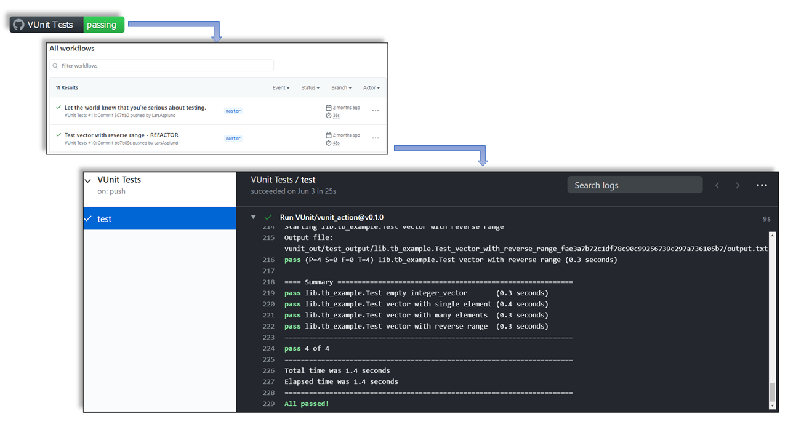

Setup/configuration scripts¶
Keeping testing environments up to date with rapidly evolving tools can be time-consuming and can lead to frustration. In this section, scripts and configuration tools to automate the setup and/or configuration of simulators and VUnit are presented.
GitHub Actions¶
GitHub’s CI/CD service is named GitHub Actions (GHA). It allows to create automated workflows for your repositories, which are defined through YAML files. Workflows can be triggered by any event, such as push, issue creation or publication of releases.
GHA provides virtual machines with GNU/Linux (Ubuntu), Windows or macOS. Hence, it is possible to write the steps/tasks using the default shells/terminals (bash, powershell, etc.), as in any other CI/CD service. By the same token, any language can be used (Python, JavaScript, Ruby, Go, Rust, etc.). However, there are also predefined tasks named Actions. Those are written either in JavaScript/TypeScript (for any OS) or packaged in a Container Action (GNU/Linux only). Some Actions are provided by GitHub (see github.com/actions), and some are published in the GitHub marketplace. Nevertheless, any GitHub repository can contain Actions.
Hence, the recommended procedure to create workflows is to pick and reuse existing Actions (see docs.github.com/actions).
Anyway, when further customization is required, the procedures explained in sections Containers and/or Virtual Machines and/or Manual setup can also be used in GHA workflows.
Note
Implementation differences between JavaScript and Container actions can be found at docs.github.com/actions/creating-actions.
Note
GitHub Actions is free (as in free beer) for public (open source) repositories. For private repositories, 2000-3000 minutes are included per month. See section “Simple, pay-as-you-go pricing” at GitHub Actions.
VUnit Action¶
VUnit Action is a reusable Action, which is published in the marketplace (github.com/marketplace/actions/vunit-action). It helps you build a workflow for running your HDL testbenches, and then present the results.
To use VUnit Action for your project, you need to create a YAML file (some_name.yml)
and place that in a directory named .github\workflows (located directly under your project root), in the default branch
of your repository. The YAML file should contain, at least, the following piece of code.
name: VUnit Tests
on:
push:
pull_request:
jobs:
test:
runs-on: ubuntu-latest
steps:
- uses: actions/checkout@v2
- uses: VUnit/vunit_action@v0.1.0
Important
Currently, VUnit Action is implemented as a Container Action. As a result, tests are executed in a Docker/OCI container, regardless of the CI/CD host being ubuntu-latest.
Whenever someone pushes code to the project or makes a pull request, this workflow is triggered. First, the code is checked
out using the checkout action. Then, the VUnit Action is triggered,
to run the run.py script located in the root of your repository. If the VUnit run script is located elsewhere, you specify
it in the YAML file:
- uses: VUnit/vunit_action@v0.1.0
with:
run_file: path/to/vunit_run_script.py
To build trust with the user community by clearly showing that you have tests up and running, we recommend that you add a badge/shield to the README of your project. It will show the latest status of you tests:
[](https://github.com/<user or organisation name>/<name of your repository>/actions)
Hint
shields.io is another badge/shield provider which allows customizing some characteristics, such as shape, color, labels, icons, etc. When combining shields corresponding to different services, it is suggested to use shields.io in order to get an homogeneous result. Moreover, shields.io provides ready-to-copy snippets for multiple languages (Markdown, reStructuredText, HTML, etc.).
Clicking the badge/shield will take you to a list of workflow runs, and then further to the results of those runs:

Presenting GHA test results.¶
Self-hosted runners¶
By default, GitHub Actions workflows are executed on GitHub’s servers. However, it is possible to setup so-called self-hosted runners. Those are machines owned by users/developers/organizations/companies, where a client service is executed. Then, users can assign specific workflows to be executed on self-hosted runners. See docs.github.com/actions/hosting-your-own-runners.
As explained in docs.github.com/actions/hosting-your-own-runners: Self-hosted runner security with public repositories, it is strongly discouraged to use self-hosted runners with public repositorites, in order to avoid PRs executing potentially dangerous code. That is mainly because self-hosted runners have access to the tools available on the host. Yet, for that same reason, using self-hosted runners is a suitable solution for having CI with non-FLOSS simulators.
Important
VUnit is currently tested in CI with GHDL only. Specific companies provide a limited set of licenses for non-FLOSS simulators, which some developers can use locally. Ideally, companies interested in supporting VUnit would provide a machine to serve a self-hosted runner in a private fork. If you want to contribute, get in touch!